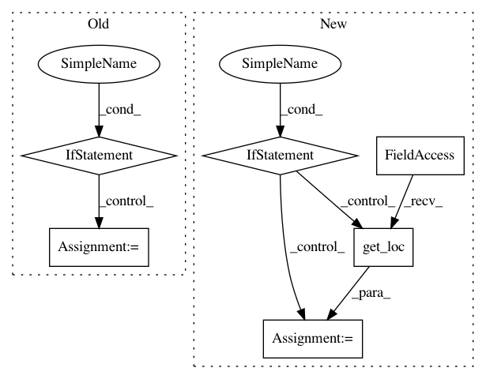

39c421ed3104fd961f3de2105acedb9a791a5f1f,conceptnet5/vectors/query.py,VectorSpaceWrapper,similar_terms,#VectorSpaceWrapper#Any#Any#Any#,101
Before Change
Get a
if isinstance(terms, str):
terms = [(terms, 1.)]
// TODO: filter
self.load()
vec = self.expanded_vector(terms)
small_vec = vec.iloc[:self.small_k]
similar_sloppy = similar_to_vec(self.small_frame, small_vec, num=limit * 50)
After Change
vec = self.get_vector(query)
small_vec = vec[:self.small_k]
search_frame = self.small_frame
if filter:
start_key = filter
// "0" is the character after "/", so end_key is the first possible
// key that"s not a descendant of the given filter key
end_key = filter + "0"
start_idx = search_frame.index.get_loc(start_key, method="ffill")
end_idx = search_frame.index.get_loc(end_key, method="bfill")
search_frame = search_frame.iloc[start_idx:end_idx]
similar_sloppy = similar_to_vec(search_frame, small_vec, num=limit * 50)
similar_choices = self.frame.loc[similar_sloppy.index]
similar = similar_to_vec(similar_choices, vec, num=limit)
return similar
In pattern: SUPERPATTERN
Frequency: 3
Non-data size: 6
Instances
Project Name: commonsense/conceptnet5
Commit Name: 39c421ed3104fd961f3de2105acedb9a791a5f1f
Time: 2016-06-14
Author: rob@luminoso.com
File Name: conceptnet5/vectors/query.py
Class Name: VectorSpaceWrapper
Method Name: similar_terms
Project Name: pmorissette/bt
Commit Name: b2b8447ee3ccfd7ca63414bb8f5788992269f0fe
Time: 2018-04-12
Author: jordan.platts@ahss.org
File Name: bt/algos.py
Class Name: RunDaily
Method Name: __call__
Project Name: pmorissette/bt
Commit Name: b2b8447ee3ccfd7ca63414bb8f5788992269f0fe
Time: 2018-04-12
Author: jordan.platts@ahss.org
File Name: bt/algos.py
Class Name: RunWeekly
Method Name: __call__